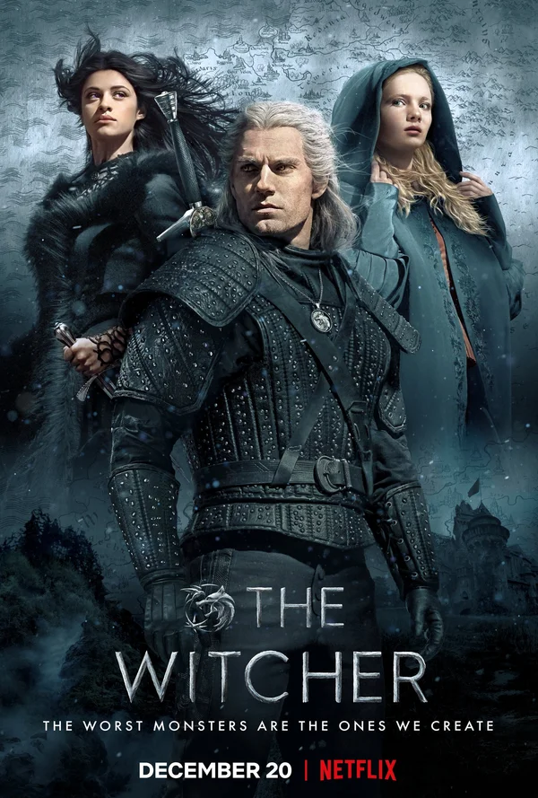

Сериалы смотреть онлайн
Вы любите смотреть сериалы онлайн и проводите много времени, прочесывая сайты в поисках чего-нибудь интересного? Стоит задержаться на clover.ru – сериалы, которые собраны у нас, вам хватит надолго.

Название
Год
Страна
Жанр
Время
В главных ролях
Ведьмак
2019
Польша, США
Боевики, Приключения, Драмы
60 мин
Генри Кавилл, Фрейя Аллан, Аня Чалотра
Про сериал
Действие сериала, основанного на одноименной фэнтези-саге Анджея Сапковского, разворачивается вокруг ведьмака Геральта из Ривии — наемника-мутанта, который специализируется на уничтожении чудовищ и ведет кочевой образ жизни, стараясь найти собственное место в жестоком мире. Однако когда судьба сводит Геральта с могущественной чародейкой Йеннифэр и юной принцессой Цириллой из Цинтры, хранящей мрачный секрет, ведьмак оказывается втянут в жестокое противостояние между двумя воинственно настроенными народами, борющимися за власть над обширными землями...